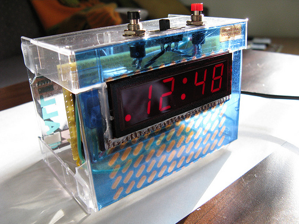

I made this LED clock as a Christmas present for someone who has a basement full of old tech.
The LED display is salvaged from an old clock-radio. The enclosure (which isn’t fully enclosed) is made from old cassette tape cases and decorated with album art (about as old as the LED) printed on transparent decals.
The electronics are loosely based on Adafruit’s Ice Tube clock. I used a BoArduino module which has a microcontroller and a power supply on a small board. I replaced the BoArduino’s 16 MHz oscillator with a watch crystal and set the microcontrollerto run on its internal clock. I found an old-school driver chip for the non-multiplexed LED display (Micrel/Microchip MM5451). There’s a photocell for automatic brightness control.
The firmware is also partly from the Ice Tube, partly written by me. Mike’s Arduino version of the Ice Tube firmware also came in handy for prototyping. Since the display has only four digits, this clock doesn’t have fancy text menus like the Ice Tube. Source code is available on GitHub.